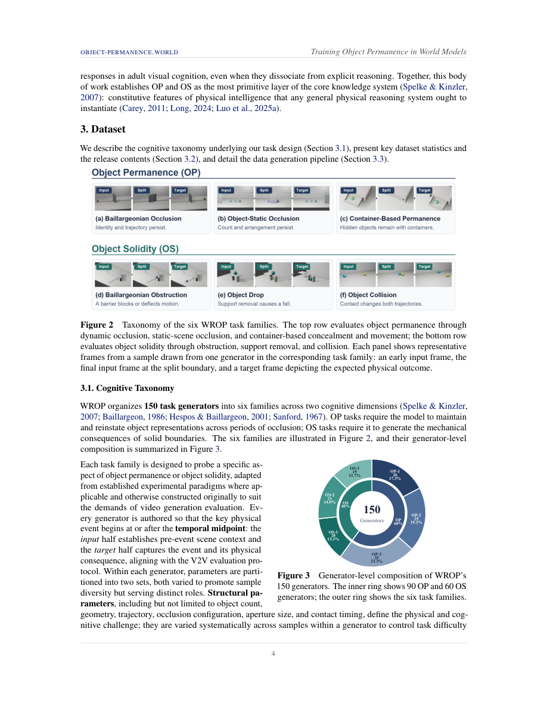

#1
★ 8/10
Training Object Permanence in World Models
Training Object Permanence in World Models

图 Figure · Page 4 of paper
🎯 （AI 中文深度分析暂不可用：Anthropic API 额度不足。英文栏为论文原文摘要，下方链接均可正常访问。）
Object permanence and solidity are hallmarks of human cognitive priors
| 维度 | 中文 | English |
|---|---|---|
| ❓ 待解决 的问题 |
（AI 中文深度分析暂不可用：Anthropic API 额度不足。英文栏为论文原文摘要，下方链接均可正常访问。） | Object permanence and solidity are hallmarks of human cognitive priors. Recent studies show that video generation models, a paradigmatic class of current world models, have begun to show emerged reasoning abilities, making them ideal candidates for building human-like physical intelligence. Do video models have emerged object permanence in them? If not, could we train them with a core-cognition inspired dataset? We introduce WROP (World Reasoning with Object Permanence), a data infrastructure of 150 hand-designed cognitive science inspired tasks, divided into six cognitive categories. We build Blender generators that randomize speed, lighting, camera angle, and other nuisance parameters while preserving each task's cognitive structure, yielding 10,000+ samples per task. We release a 1.5M-sample training corpus and a 300-question exam. On this exam we evaluate 14 video models: 3 reference-to-video, 7 edit, and 4 continuation, among which PWM-WROP, our 16B world model. In a blind pairwise Elo study, PWM-WROP ranks first among continuation models and third overall, behind only a statistical tie between two reference-to-video models. We release the data, exam, model answers, scores, weights, and PWM, our native-PyTorch training stack on AWS Trainium2. |
| 💡 解决 的亮点 |
（AI 中文深度分析暂不可用：Anthropic API 额度不足。英文栏为论文原文摘要，下方链接均可正常访问。） | See the paper’s original abstract in the "Problem / 背景" row above. |
| 🧪 实验 内容 |
（AI 中文深度分析暂不可用：Anthropic API 额度不足。英文栏为论文原文摘要，下方链接均可正常访问。） | See the paper’s original abstract in the "Problem / 背景" row above. |
| 📊 实验 结果 |
（AI 中文深度分析暂不可用：Anthropic API 额度不足。英文栏为论文原文摘要，下方链接均可正常访问。） | See the paper’s original abstract in the "Problem / 背景" row above. |
| 🏁 结论 | （AI 中文深度分析暂不可用：Anthropic API 额度不足。英文栏为论文原文摘要，下方链接均可正常访问。） | See the paper’s original abstract in the "Problem / 背景" row above. |
| 🔗 论文 链接 |
arXiv: 2609.28654 · 📥 PDF | |
⚙️ Method · 方法详解
（AI 中文深度分析暂不可用：Anthropic API 额度不足。英文栏为论文原文摘要，下方链接均可正常访问。）
See the paper’s original abstract in the "Problem / 背景" row above.
🌟 Why It Matters · 为什么重要
（AI 中文深度分析暂不可用：Anthropic API 额度不足。英文栏为论文原文摘要，下方链接均可正常访问。）
See the paper’s original abstract in the "Problem / 背景" row above.